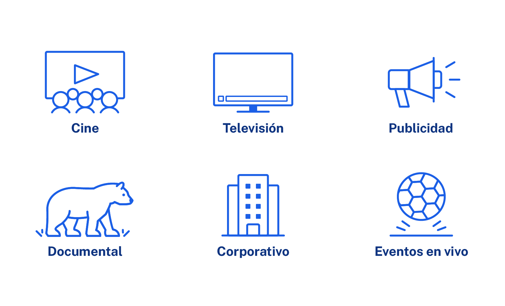

Resolvemos los desafíos que plantea la transmisión de video
y la transferencia de datos en tiempo real.
Ayudamos a los periodistas a reportar las noticias que nos mantienen informados,
a los meteorólogos a alertar sobre eventos climáticos extremos
y a los equipos de emergencia para que coordinen sus acciones.
Transformamos la creatividad en invención e innovación.
Somos representantes oficiales de Dejero,
empresa líder en el mercado mundial.
Ofrecemos productos para operar con rapidez,
eficiencia y máxima versatilidad.

Los dispositivos de la red Dejero GateWay están diseñados para proveer conexiones confiables de voz, video y datos en entornos móviles, y para suministrar conectividad wireless en locaciones fijas. . Ver más >
El transmisor móvil más duradero y versátil del mundo. Diseñado específicamente para enviar de forma confiable videos de alta calidad desde ubicaciones remotas. Ver más >
Un receptor de cuatro salidas compatible con HEVC. Permite reconstruir el video transportado a través de redes IP desde transmisores Dejero. Ver más >
Permite enviar información de baja latencia a presentadores, operadores de cámara y el resto del personal de producción en el campo, para ayudarlos a estar sincronizados. Ver más >
La familia de aplicaciones LivePlus posibilita que los periodistas y presentadores de noticias salgan en vivo con calidad de video profesional desde virtualmente cualquier parte, utilizando un equipo mínimo: tabletas, smartphones o laptops. Ver más >
Para las organizaciones, tener conexiones estables es extremedamente importante; y las conexiones de un solo canal presentan vulnerabilidades que pueden resultar en anchos de banda insuficientes.
Para resolver este problema, la tecnología SBT de Dejero incopora simultaneamente conexiones de IP cableadas por fibra y wireless (3G/4G/5G, Wi-Fi, satellite), ofrecidas por múltiples proveedores. De ese modo, genera una “red de redes” propia, segura y confiable.
La Corte, Mandarina, Telefe, ESPN, TyC, TVP,
TNT, LN, C26, C13, Canal Rural,
Quality Media, Fox Sports.